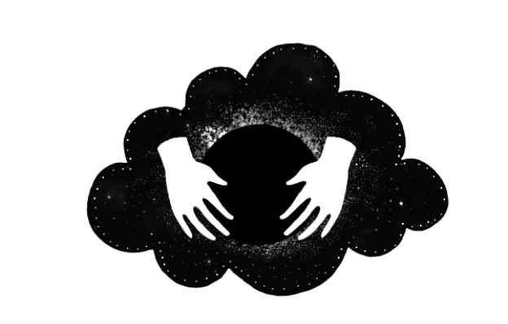

Remedial
Remedial merupakan kegiatan yang akan Serrum lakukan selama 1 tahun di 2019. Kegiatan ini melibatkan murid SMA (pilihan) di Jakarta dan sekitarnya yang berfokus pada pola konsumsi informasi dan pengetahuan berdasarkan perkembangan hari ini.
